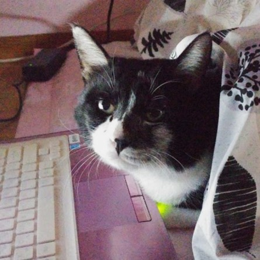

My Resume

Lucky Heo(cat, ♂)
Summary
I am a clever and chic cat. I can do whatever I want if I feel like it. There are countless reasons you to hire me cause I'm an awesome cat. As you can see in my picture I like use my pink laptop and I code for fun.
Education
- Home schooling
- Bachelor's degree in awesome feline
- Bachelor's degree in biting
Work experience
- Full-time home cat for 20 years
- Family consultant
- Excutive director of cuteness
- Expert of eat and sleep
Skills
I have strong will and must do what I want regardless of struggle(like my hooman family's determent) Nothing can't stop me. Also, I have high passion toward my favorite food. I like shirimp and fish, especially tuna is my favorite. Almost forgot how patience I am. I always company my family even how talktive they are. I know when is my time to have treat and value family time.
Hobby
Contact